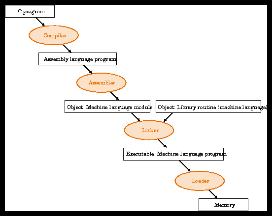

The Hardware
Transistors make up logic gates. Stringing logic gates together forms a set of Combinational/Sequential logical components. These components are the constituents of the CPU and memory hardware on the computer. Machine language (a series of bits) is stored in the memory, loaded in the CPU, and the CPU preforms said instructions.
The main components of a computer are:
- Main Memory
- Registers
- Artihmetic Logic Unit (ALU)
- Control
The cycle goes as follows:
- Fetch
- Decode
- Execute
- Store
A computer is, at it's most fundamental level, a state of flowing charge. Current flows through a series of switches that determine a state of On or Off, True or False, 1 or 0. Something or Another. Early computers had physical switches that you flipped to get what you wanted, but now transistors are the building blocks that we use. Transistors can be operated by applying a voltage. Essentially, when you have Off/False/0, you have no current. Which implies the opposite for flowing charge. Transistors are put together to make Logic Gates. Logic Gates are the first step up the ladder of abstraction. Logic Gates are a physical implementation of Boolean Algebra, and is completely defined for any function with three simple operations: AND, OR, and NOT. With those three operations in place, you can take any input, and get any result, using whatever rules you like. It's functionally complete.
The different sets of logic gates, implemented by transistors, is a foundation to work with. These components are then put together to get a Central Processing Unit (the CPU). This is by far the most important part of your computer. The CPU operates on a clock cycle (the frequency that it runs at), processing instructions every cycle. The instructions are a series of bits (strings of 0 or 1) that tells it what to do. The CPU has it's own memory cache called registers, a sort of CPU RAM. The CPU will read and write to it's registers, and even loads its instructions from a register. The series of bits that the CPU parses is known as machine language.
Machine Language is very difficult to understand for a human, considering it's a bunch of 0's and 1's. Someone got the bright idea to figure out a way to instruct the computer in a more human readable format (the early programming languages, i.e. MIPS). This adds an extra step to writing instructions for the CPU, because now the human readable language must be translated to machine language. This translation occurs when you 'compile' a program. It is parsed and rewritten in machine code that the CPU can understand. One can imagine this was very difficult, as the very first compiler had to be written in machine code first. Once you have machine code compiler, the world opens up very fast; you can now write a new compiler to be compiled by the old compiler. For example, you write a compiler in machine code (strings of 0's and 1's) to translate a programming language you invented, let's call it One. What if you've come up with a better way of doing things, and want to write a new language, let's call it Two. Since you don't want to go through the task of writing more machine code, you decide to write a compiler for Two using One, which gets compiled using the original compiler for One. Now that the Two compiler is in machine code, you can write in Two and things will work just fine. The first step is always machine code, there's no way around. So when you use higher level languages, keep in mind the people who slaved away writing the first compilers. It's no simple task.

This is all, however, a brief and simple run down. Computer Organization goes much, much further than this. It's good to have some idea of the lower level of things, if not solely for appreciation of what goes on when you use a computer, and moreso when you code.